Вместо предисловия
Отчет об этом походе состоит из отдельных наблюдений о наиболее запомнившихся моментах, а не из сквозного повествования о каждом дне похода. Дополнения от руководителя похода выделены курсивом. Если вас интересуют треки или технические подробности каждого дня вы можете спокойно перейти к этому разделу, как и к любому другому, так как они практически не связаны между собой и сквозное прочтение необязательно. Для простоты навигации пользуйтесь оглавлением.
Оглавление
- Вместо предисловия
- Спортивный велопоход, маршрут и немного статистики
- Авиакомпания Катарские авиалинии и внутренний перелет в Индии
- Участники
- Подготовка к походу
- Что больше всего запомнилось
- Встречи в пути
- Как, вы не едете через Пакистан?!
- Улыбаемся и машем
- Еда
- Сушеный говяжий фарш
- Красный велосипед
- Эхо войны
- Езда по жаре
- Индийское дорожное движение
- Торговаться или нет?
- Сим-карты, телефоны, интернет, электричество
- Немного панорам
- Ссылки
- Треки, фотографии и прочие технические подробности каждого дня пути
Спортивный велопоход, маршрут и немного статистики
Классический велопоход, на мой взгляд, включает две основные составляющие: спортивную и культурологическую, причем доли этих частей могут сильно отличаться в зависимости от целей группы. На этот раз цели у нас были не совсем обычные: проехать 2000 километров по горам за 20 дней, с набором высоты более 36 километров, подняться на перевалы выше 5300 метров и оставаться на высоте более 4000 м. в течение недели. Как вы уже догадались, спортивная составляющая в этом походе превалировала. Очень хотелось попробовать, что такое настоящий спортивный велопоход.
Безусловно, было жалко проезжать мимо многочисленных ответвлений к разнообразным достопримечательностям и красотам, но формат похода диктовал свои условия.
Типичный диалог:
- поедем смотреть?
- нет, у нас же велоэкспресс ((
В общем и целом я не жалею о выборе такого формата, хотя бы по тому, что маршрут идеально ему соответствовал, и где, как ни в Гималаях, ставить над собой такие эксперименты?
К чему я все это? Чтобы вы понимали, что в отчете не будет ничего о поисках шамбалы или встречах с Далай Ламой. С другой стороны за три недели и 2000 километров мы успели кое-что увидеть вдоль дороги.
Павел:
Активная часть похода прошла с 11 сентября по 2 октября 2011 года.
Пройденный маршрут: Srinagar - пер. Zoji La (3555 м) - Kargil - пер. Hamboting La (4100 м) - Batalik - долина Indus river - Dargoo - Leh - пер. Taglang La (5328 м) - пер. Lachulung La (5092 м) - пер. Nakee La (4930 м) - пер. Baralacha La (4990 м) - Sarchu - Keylong - подножье пер. Rohtang La - долина Chandra river - пер. Kunzum La (4550 м)- Kaza - Sumdo - Shimla - Ambala city - Karnal - New Delhi.
Немного статистики по пройденному маршруту:
- пройденное расстояние на велосипеде - 2040 км;
- количество полных ходовых дней - 20;
- общее время в пути - более 150 ч;
- максимальная высота - 5390 (перевал Tangla La);
- максимальный набор высоты за ходовой день - более 3 000 м;
- общий набор высоты - более 35 000 м.
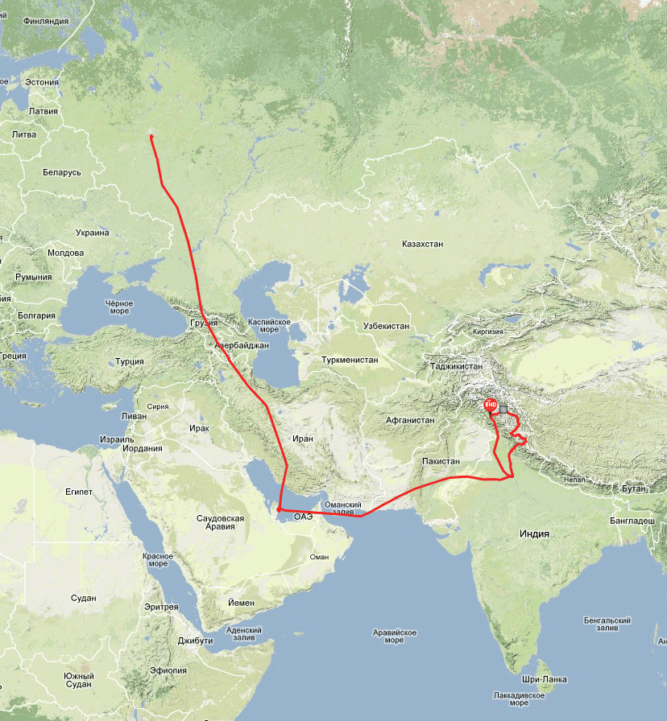
не подумайте плохо -)) на картинке выше представлен наш путь вместе с авиаперелетом -))
Авиакомпания Катарские авиалинии и внутренний перелет в Индии
Шикарная велодружелюбная компания. Правила как у Аэрофлота: 23 килограмма груза, велосипед входит в общий вес багажа, габариты значения не имеют. Обслуживание во время полета на высшем уровне: вкусная еда, улыбающиеся стюардессы, неограниченное количество бутылочек хорошего вина.
Павел:
В Дели мы добирались двумя группами: Саша и Ваня летели катарскими авиалиниями из Москвы с пересадкой в Дохе (столица Катара), а я и Сергей "Аэрофлотом" с пересадкой в Москве. Разница в прибытии в Дели у нас была около получаса. За это время мы с Сережей успели обменять в аэропорту деньги, оценить колоритность арабского и азиатского населения. После паспортного контроля есть дьюти-фри, но воду и сок там не продают, зато в зоне прилета большое количество автоматов с водой и другими прохладительными напитками в бутылках. Около стен есть фонтанчики с питьевой водой, но из них мы пить не решились.
Также в зоне прилета несколько обменных пунктов, в которых принимают, в том числе, доллары и евро. В одном из них за обмен брали небольшую фиксированную (в не зависимости от суммы) комиссию. При обмене лучше попросить кроме достаточно крупных по местным меркам банкнот в 500 рупий выдать также немного банкнот номиналом 100 или даже 50 рупий - на мелкие расходы типа той же воды или сока. В тоже время у нас не было никаких проблем со сдачей, но как правило мы делали все покупки из расчета на четверых.
Удивило очень большое количество огромных LCD телевизоров, которые десятками выгружали в отделении выдачи крупногабаритного багажа.
Для внутреннего перелета в Сринагар мы воспользовались услугами лоукоста IndiGO http://goindigo.in Билеты покупали на сайте перевозчика за один месяц до поездки и они обошлись нам в 3000 рупий (2000 рублей) за 1, 5 часа полета на человека вместе с дополнительной страховкой (130 рупий) и питанием (175 рупий). В стоимость билета по умолчанию не входит даже вода.
Между Терминалом T3, куда прибывают международные рейсы, и T1, обслуживающим внутренние перелеты, курсируют бесплатные автобусы. Время в пути около 20 минут, интервал движения тоже примерно такой. Также необходимо учитывать время, необходимое на вход в аэропорт, так как при этом проверяют билеты и документы (это касается не только терминала T1, а вообще аэропортов). Также для посадки на рейс потребовалось предъявить ксерокопию карточки, с которой покупались билеты.
Аэробус А320 компании IndiGO - это один сплошной экономический класс, самолет достаточно новый. После приземления в Сринагаре, а самолете осталась часть пассажиров и самолет полетел дальше в Джамму. Вот такой автобус получается.
Вообще, билеты на внутренние перелеты в Индии аэропортов подбирать на http://www.yatra.com/ Этот сайт осуществляет поиск по большему числу перевозчиков, чем популярные сервисы такие как skyscanner.ru, expedia.com или http://www.aviasales.ru/
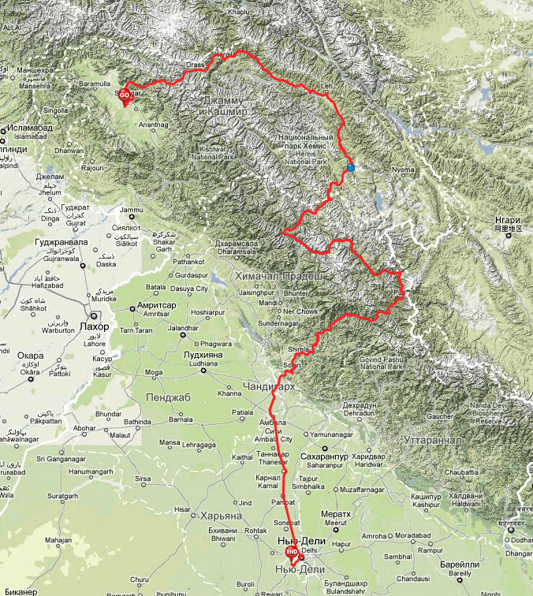
Собственно велосипедная часть трек
Участники
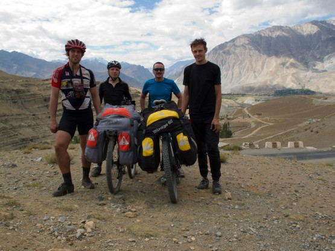
Сергей - участник, Павел - руководитель, Александр - участник, автор этого текста, Иван - участник
Подготовка к походу
Сила книги
| 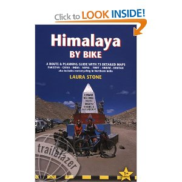 | В процессе подготовки к походу Паша прислал ссылку на книгу Himalaya by Bike by Laura Stone, некую Библию путешественников по тем местам. Как потом выяснилось это действительно так: все едут именно по разным комбинациям маршрутов, описанных там, причем с распечатками страниц книги. Автор, безусловно, много поработала над материалами книги, описан буквально каждый участок, каждого маршрута, причем качественно. Павел: Рассказывать об этой книге можно очень долго, действительно, очень качественный материал. Не знаю как по соседним странам, а по индийским Гималаям - это азбука от "А" до "Я" и основной источник информации при планировании маршрута. Сайт автора этой книги http://www.himalayabybike.com/HBB_new/HBB_Home.html Павел: Также при подготовке к походу использовался путеводитель Lonely Planet. В нем содержится много полезной информации, в том числе и по прививкам и оформлению пропусков в закрытые районы. |

Схема маршрутов, описанных в книге
Карты
Павел:
Для навигации в походе мы использовали электронную карту для навигатора от авторов указанной книги Himalaya by Bike, а также традиционный генштаб, на который в графическом редакторе нанесли маршрут и основные точки, такие как перевалы, кафе и магазины по описанию из книги, мосты. Доступный в Интернете генштаб масштаба 1 и 2 км сильно устарел, но наши доработки позволили его успешно использовать. Желающим могу выслать доработанные карты.
Прививки
Сначала сходил в районную полУклинику, там пояснили, что прививки нужно делать либо все в один день, либо с интервалом месяц.
Из запрошенных мной у них были
- Гепатит В;
- Столбняк + Дифтерия (комплексная).
По утверждениям врача, самые низкие цены в больнице Бехтерева.
Утром поехал в Бехтерева и сделал там:
1. Гепатит А;
2. Брюшной тиф.
обошлось в 1400 с копейками.
После обеда сходил в поликлинику и сделал бесплатно:
3. Гепатит В;
4. Столбняк + Дифтерия (комплексная).
бесплатно
В обоих случаях врачи были не против такого количества прививок, а медсестры возмущались. Никаких осложнений не было.
UPD(2026 года): Ни в коем случае не делайте так! Не более одной прививки в месяц!
Павел:
У меня уже до подготовки к походу были сделаны прививки от брюшного тифа и гепатита А. За 3 месяца до поездки из расчета на будущее одновременно "доколол" гепатит B, желтую лихорадку и менингококковую. Побочных эффектов не было. Колол в одном из коммерческих центров города с удобным временем приема врачей.
Все эти прививки, кроме, пожалуй, гепатита А и столбняка, для посещения северных районов Индии считаются рекомендуемыми и более важно соблюдать элементарную гигиену рук и мыть фрукты и овощи перед употреблением в пищу. Ну это как везде. Не думаю, что в Санкт-Петербурге этого делать не надо.
Визы, анкеты, пермиты, журналы. . .
Любовь индийцев к заполнению разнообразных анкет, и регистрации туристов во всевозможные журналы граничит с маразмом. Все начинается еще при подаче документов на визы. Более бестолковой и противоречивой анкеты я еще не встречал, благо в Интернете есть инструкции по заполнению (тоже противоречивые). Везде написано, что нужно бронировать отели, и в консульстве по телефону подтвердили эту информацию. На самом деле при подаче документов распечатку бронирования у нас не взяли, то есть достаточно было просто вписать в анкету любой отель.
Следующую анкету мы заполняли в аэропорту Дели до прохождения паспортного контроля, затем в Сринагаре, потом в Каргиле, Казе. . . и даже при прохождении паспортного контроля на вылет из Индии нужно заполнить анкету. Сколько раз нас записали в разнообразные журналы военные, полиция и просто служащие гостиниц я сбился со счета. Очень часто записывали только имя без фамилии и номер паспорта, причем некоторые проверяющие не могли в паспорте визу своего государства и начинали переписывать сведений из, например, шенгенской визы, мы их вовремя поправляли.
Все эти многочисленные манипуляции с нашими паспортами индийцы делали с очень серьезным видом, который не оставлял сомнений в важности их работы. Надо отметить, что нам ни разу не нахамили или иным способом дали понять - они начальники и мы в их власти. Напротив, нас несколько раз угощали чаем, соком, печеньем и это при проверке документов на военных постах.
Для большей наглядности представьте, что вас останавливает полицейский в нашем метро с целью проверки документов, и пока он записывает ваши данные в журнал, его напарник приносит вам сначала воды на подносе, а потом чай с печеньем. Представили? Так вот в Индии мы встречали такое многократно. Удивительная страна.
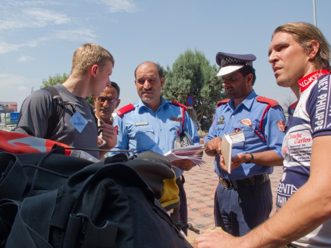
Документы проверяет полиция(?)
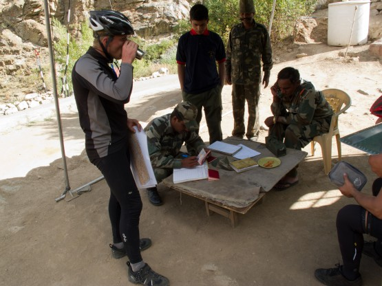
Документы проверяют военные
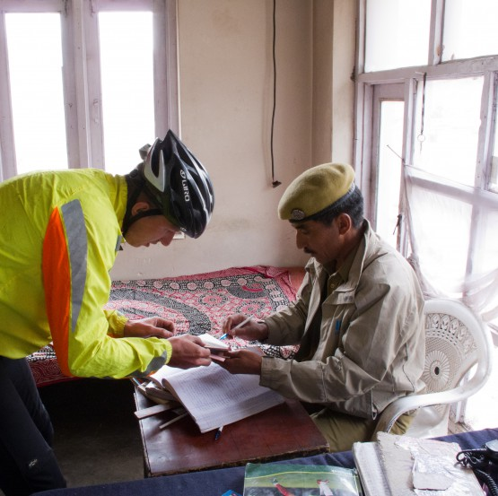
Документы проверяет мужик в берете
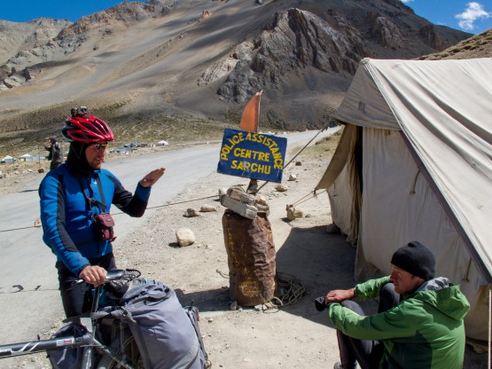
А эта палатка настоящий центр по проверке документов
Пермиты - это пропуска в закрытые районы. В нашем случае закрытой была долина реки Инд, а также участок вдоль китайской границы. Пермиты оформляются в неких DC офисах, что это за зверь я не знаю, но там сидят занятые серьезным делом люди в военной форме и чай они туристам не наливают. Как всегда нужно заполнить анкету, кроме того требуется ксерокопия загранпаспорта (страницы с фотографией и визой, можно на одном листе). Ксерокопии желательно сделать еще дома, чтобы не бегать в поисках ксерокса.
Первый пермит мы получали в Каргиле. История вышла забавная. Дело в том, что мы дружно решили отойти от описанного в книге маршрута и проехать как можно больше по долине реки Инд. На всякий случай мы спрашивали у всех встречных военных и полицейских нужен ли нам пермит на этот участок. Все дружно и в один голос говорили, что нет. На самом деле спрашивать нужно в туристических офисах, а не у постовых.
Из Каргила мы поднялись на перевал 4100, спустились в долину Инда (это заняло целый день) и только внизу долины нас порадовали, что дальше без пермитов нельзя, а пермиты нужно было брать в Каргиле (назад через перевал). Этот факт нас малость опечалил, так как плотный график не предполагал таких двухдневных затупов.
Кстати очень непривычно вели себя военные, остановившие нас на посту. Как они переживали, что так вышло и, что они не могут нас пропустить. Несколько раз пытались звонить начальству, дали поговорить с начальством нам (по своей инициативе), кормили печеньем, поили чаем, предложили проехать еще 5 километров дальше в закрытую зону и там переночевать в поселке, а утром ехать за пермитами. Несмотря на всю эту заботу, на душе было не радостно. Можно сказать - начало маршрута, а тут такой облом.
Немного успокоившись придумали, как минимизировать неприятности. Для экономии времени решили подброситься на машине на перевал, там заночевать (перевалив и спустившись метров на 200 по высоте, место мы приметили еще на подъеме), а утром Паше с Ваней ехать налегке своим ходом в Каргил за пермитами, а нам с Сережей поднимать рюкзаки и ждать на перевале возвращения.
В итоге мы потеряли чуть больше половины ходового дня, вместо двух (если бы ехали перевал своим ходом).
Так что если есть сомнения, то ищите туристический офис и узнавайте там про необходимость пермитов на участках вашего маршрута и не доверяйте кому попало.
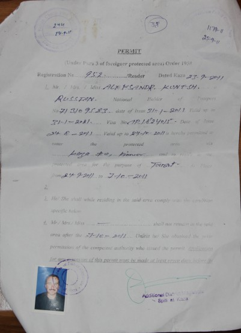
Пермит
Второй пермит мы получали в Казе. Памятуя прошлые приключения, туда приехали ранним утром и все равно пермиты получили уже после обеда. Пришлось бегать в соседнее здание, потом ехать в старую Казу, к единственному в городе фотографу, так как на этот пермит была нужна фотография.
Кстати фотограф в Казе большой оригинал. Стены его лавки украшают пародии на фотографии, судя по сюжетам которых становится понятно, что он считает себя мастером студийной фотосъемки. ГЫ. На фотографии ниже я. Нет, друзья я не китаец, и по этой фотографии на улице вы меня не узнаете. Просто этот мастер умудрился усадить меня лицом к солнцу и вдобавок шваркнуть вспышкой в глаза с расстояния 1 метр. Берите фотографии из дома, если не хотите лишних приключений.
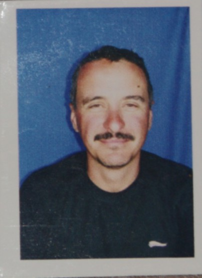
-)
Снаряжение
Качество снаряжения в сложном походе имеет большое значение. При подготовке было уделено много внимания экипировке. Не скажу, что все получилось идеально, но как минимум неплохо. О нескольких важных, на мой взгляд, моментах хочу рассказать. В общем и целом, техника и снаряжение не подвели. Вес рюкзаков удалось удержать в пределах 10 кг.
Несколько моментов, которые хочется отметить особо:
1. Удачно выбрали палатки - Вега 2 Si/Sc - двухместные, с силиконовым верхом и двумя скандиевыми дугами. На первый взгляд ничего особенного, но вес получается меньше килограмма на человека! При этом двоим внутри вполне хватает места и достаточно комфортно. В походе использовалось две палатки: защитного и серого цвета. Обе хорошо сливаются с местностью, что немаловажно в условиях скрытых ночевок, а мы стараемся не светить место стоянки, дабы спокойно выспаться ночью. Одна палатка (моя) используется уже второй год, вторая (Пашина) была совсем новая. Качество изготовления за эти 2 года не ухудшилось, а даже наоборот - решили проблему со стойками, стали накернивать места соединения трубок, чтобы внутренняя трубка не проваливалась. Производители молодцы, не то, что Гармин, который 10 лет не может решить проблему отваливающихся резинок на своих приборах. Стоимость палатки минимум в 2 раза ниже, чем у ближайших импортных аналогов по весу и качеству. Конечно, нужно понимать, что излишеств в виде огромных тамбуров в этой палатке нет. Часть вещей мы клали внутрь палатки, а пыльные полупустые рюкзаки оставляли в тамбуре. В таком виде они туда вполне помещаются. Палатка заслуживает самой высокой оценки!
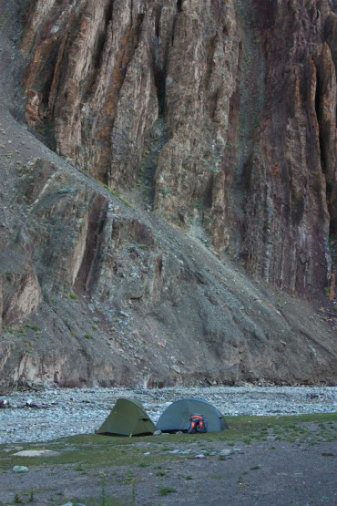
Палатки правильной расцветки
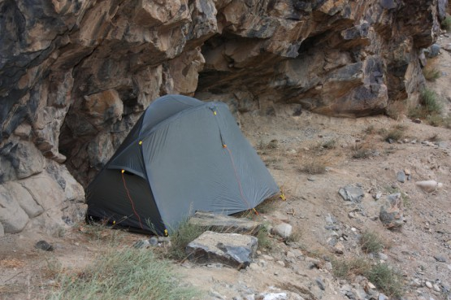
Иногда приходилось ставить на миниатюрную полку
2. У нас было два варианта рюкзаков AKME 70 и Снаряжение 60. Обсуждение велорюкзаков часто напоминает споры Shimano vs SRAM или Canon vs Nikon. Я свой выбор в пользу AKME сделал давно. На мой взгляд, они выгодно отличаются формой (широкие штанины, приземистый широкий верх), удобно и быстро крепятся к багажнику, долговечны (пользуюсь уже 5 лет, пройдено множество походов). Единственное мне не понятно желание производителей делать рюкзаки из непромокаемой кордуры. Она все равно промокает, а вот вес рюкзака заметно больше. Рюкзаки Снаряжение мне не понравились в первую очередь за свою вытянутую вверх форму. Насколько я понимаю, основная идея была в приближении формы велорюкзака к форме обычного заплечника, чтобы сделать переноску его на спине максимально удобной. Буквально этим летом я общался с любителями рюкзаков Снаряжения и они уверенно утверждали, что это действительно очень важно. Возможно, но лично мне переноска рюкзака на спине нужна очень редко. Например, в этом походе она нам не понадобилась вообще. В палестинском походе - метров 300, а это далеко не самые простые походы. В общем, я остался при своем мнении. Единственное, что порадовало в рюкзаках Снаряжение это понимание производителями, что такое правильная расцветка. Существует ошибочное мнение, что черный цвет менее маркий. Мягко говоря, это не совсем так. На фотографии хорошо видно как выглядят два рюкзака покрытые совершенно одинаковым слоем пыли.
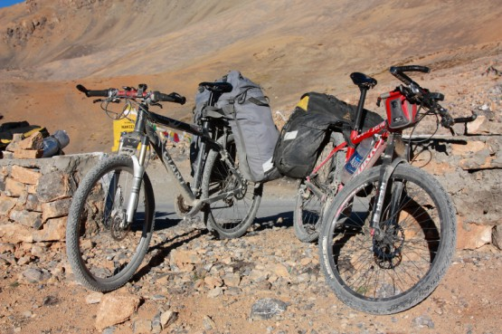
Пыль дорог
3. Относительно удачно угадали с покрышками, хотя вопрос выбора оптимальной резины для меня все еще открыт. В этом походе мы с Пашей использовали Michelin XC dry2, кантрийные покрышки в двух вариантах фолдинговой и нефолдинговой. Выяснилась странная особенность - оказывается, что отличаются они не только кевларовой нитью, но и компаундом. Пашина задняя покрышка за поход стерлась более чем на 50%. На моих (фолдинговых) износ составил около 30% после двух походов, хотя вешу я значительно больше. С самой идеей использования чисто кантрийных покрышек для туризма можно, конечно поспорить и дело не только в проколах. Так у Паши, например, случился порез боковины, который пришлось зашивать. Ехать по горному серпантину на зашитой покрышке, конечно, страшно. К сожалению, риск такой неприятности велик, так как малый вес кантрийных покрышек достигается, в том числе и за счет тонких боковин. Шестьсот грамм экономии веса на покрышках для велосипеда с рюкзаком, вроде бы, не так много, но не забывайте, что вес этот находится на ободе колеса, а раскрутка такого гироскопа требует дополнительных усилий.